박성웅
IaC 자동화와 AI 기반 FinOps로,
인프라의 운영 비용을 숫자로 줄이는 박성웅입니다.
| 생년월일 | 2000.05.04 (만 26세) |
|---|---|
| 이메일 | yeopoh13@gmail.com |
| 연락처 | 010-3223-1390 |
| GitHub | github.com/Bakseongung |
자기소개
AI를 활용한 트래픽 분석과 리소스 모니터링으로
쓰이지 않는 유휴 자원과 과하게 할당된 리소스의 운영 비용을 줄이고,
IaC 기반의 인프라 자동화를 구축하는 데 깊은 관심이 있습니다.
학부 연구생 시절 Docker 기반 문제 해결 사이트의 QA 및 테스터를 약 10개월간 수행하며
안정적인 서비스 운영의 중요성을 체감했습니다.
교외 연합동아리(UMC)에서의 Spring Boot 백엔드 개발과 교내 동아리(AIMOB)의 자율주행 프로젝트 경험은
요청이 API 서버와 DB를 거쳐 처리되는 흐름과 센서 데이터가 로봇 제어로 이어지는 구조를 직접 다뤄 보며
애플리케이션과 시스템 아키텍처를 이해하는 밑거름이 되었습니다.
KT CLOUD TECH UP 클라우드 인프라 교육을 이수하면서 프로젝트마다 팀장과 부팀장을 도맡아
협업 능력과 실무 역량을 체계적으로 다졌습니다.


공부와 프로젝트를 모두 GitHub에 남기는 사람입니다.
Python·SQL 문제 풀이와 KT Cloud 인프라 프로젝트 코드를 꾸준히 커밋해 2년 연속 연 1,000회 이상 기록했고,
팀 프로젝트(Team Clover)에서는 기능별 브랜치와 Pull Request로 팀원과 코드를 주고받으며 협업했습니다.
현재 Kubernetes 공식 문서(kubernetes/website)의 한국어 현행화에 기여하고 있습니다.
작업 전에는 영문 원문과 관련 이슈·PR·리뷰 코멘트를 먼저 읽고 번역 도구로 맥락을 교차 확인해 무엇을 왜 바꿔야 하는지 정확히 파악하고,
리뷰어와는 변경 근거를 짧고 명확한 텍스트로 남겨 비동기 협업에서도 오해 없이 소통합니다.
스킬
협업 도구
핵심 역량
- AI 모델 개발 및 다양한 오픈소스 활용
- 온라인 스마트팩토리 3-Tier 구축
- AWS와 KT Cloud 간 멀티 클라우드 환경 관리
- A2 등급 정보시스템의 DR 구축 경험
- 퍼블릭 클라우드 3사(AWS, GCP, Azure) 환경 구축 및 운영 경험
학력
| 2019.02 – 2026.02 | 강원대학교 컴퓨터공학과 (4년제) 졸업 |
|---|
자격 · 수상
| 2026.11 | AWS Certified Solutions Architect |
|---|---|
| 2026.08 | kt cloud TECH UP 해커톤 대상 |
| 2024.06 | 2024 강원지역혁신플랫폼 정밀의료사업단 의료빅데이터분석 우수상 |
교육 · 활동
- KT CLOUD TECH UP 클라우드 인프라 과정
클라우드 인프라 설계·구축과 운영 자동화를 배우고 팀 프로젝트 3건을 수행했습니다.
모든 프로젝트에서 팀장 또는 부팀장을 맡았습니다. - UMC 대학 연합 IT 동아리 · Spring Boot 서버 파트
DB 설계,
JPA·QueryDSL,
REST API 설계,
로그인·회원가입 구현까지 백엔드 흐름을 단계별로 학습했습니다. - 학부 연구생 · 온라인 저지 Code01 QA/테스터
Docker 기반 온라인 저지 시스템 Code01의 콘텐츠 설계와 운영 QA를 맡아 알고리즘 문제를 만들고,
GitHub Issues로 결함을 추적하며 엣지 케이스와 개발 프로세스를 개선했습니다.
이 결과는 후속 연구와 논문 발간으로 이어졌습니다. - AIMOB 자율주행 동아리 교내 동아리를 만들어 한백전자 SerBot AGV로 장애물을 감지·회피하는 실내 안내 로봇을 개발했습니다.
주요 프로젝트
대회
기타 프로젝트
주요 프로젝트
쑥쑥찰칵 성장앨범
스토리지 10PB 환경
회귀 분석 시 AWS S3 대비
12억 비용 절감 솔루션
Team Apple 4인 / 팀장 및 IaC/프로비저닝, AIOps
기간 2026.07.15 ~ 2026.08.18
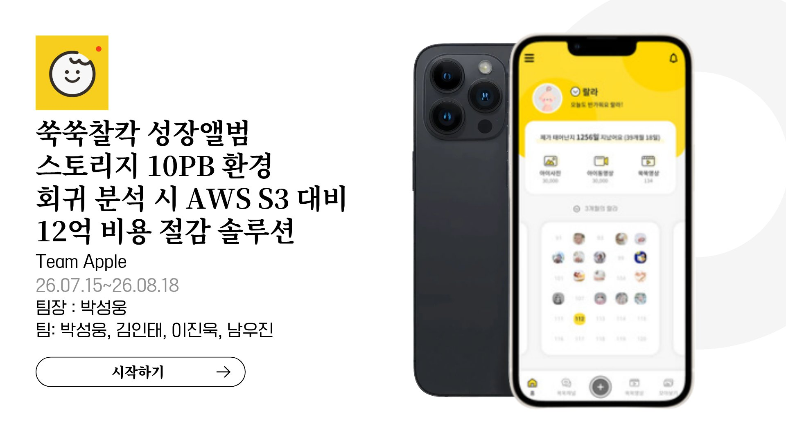


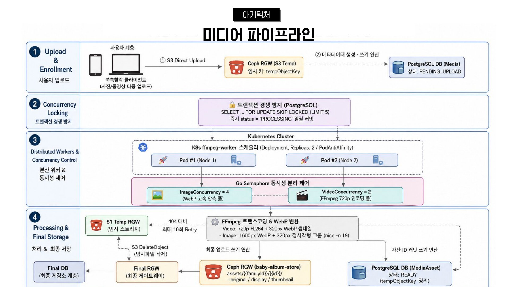


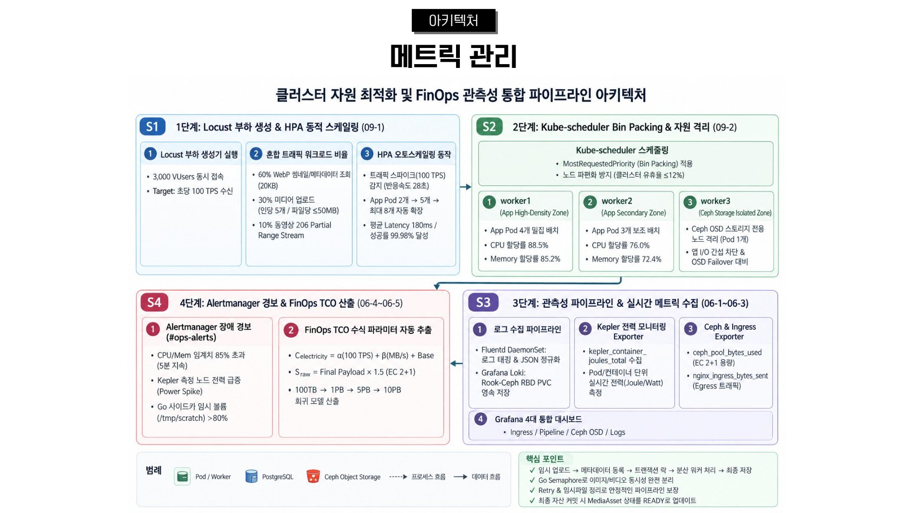
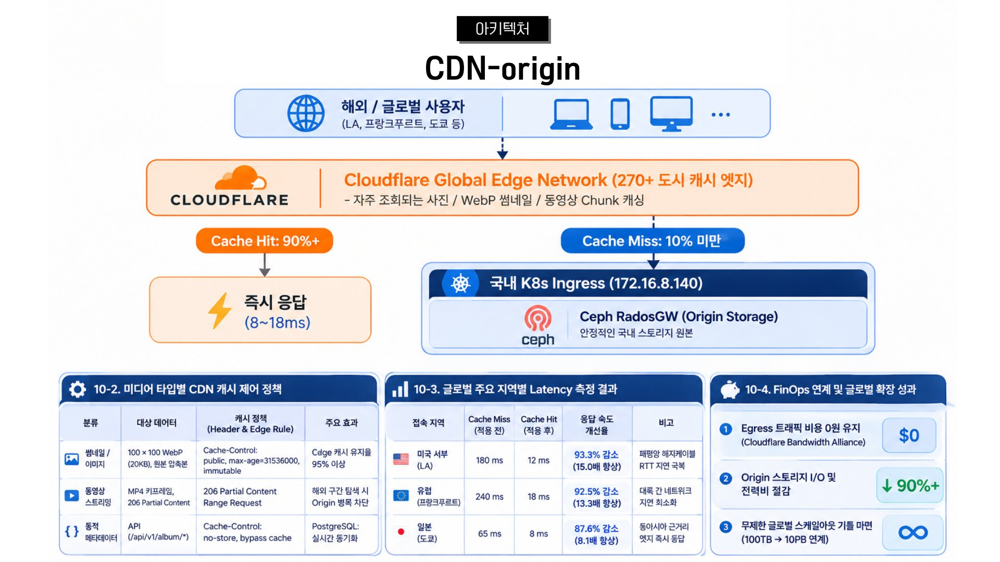
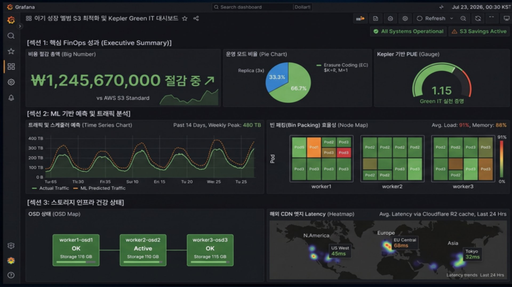
Skills
핵심주요보조
- 사용자 약 100만 명 규모의 성장앨범 서비스 '쑥쑥찰칵'을 벤치마킹해,
사진·영상 저장 비용 문제를 분석한 프로젝트입니다. - AWS S3를 Kubernetes 위의 Rook-Ceph(Erasure Coding 2+1, 저장 효율 66.7%) 기반
S3 호환 스토리지로 대체하여 클라우드 스토리지 비용을 자체 구축 스토리지로
얼마나 줄일 수 있는지 검증하는 것이 목표였습니다. - 사진·영상 업로드 파이프라인부터 CI/CD·GitOps·모니터링·AI 장애 대응까지 갖춘 운영 환경을
4인 팀으로 구성하고 업로드 성능과 저장 효율을 측정했습니다. - 팀장 겸 IaC/프로비저닝 담당으로 kubeadm 기반 K8s 클러스터를 구축하고 GitLab CI·ArgoCD로
경량 DevSecOps CI/CD와 IaC 프로비저닝 구성을 담당하며,
Kepler 전력 모니터링·알림 연동과 AI 기반 장애 대응(ChatOps)을 구현했습니다. - 3중 복제 대신 Erasure Coding 2+1로 필요한 물리 용량을 원본의 1.5배로 낮추고,
앱 단 선압축으로 저장량을 약 45% 줄였습니다.
10PB 규모에서 AWS S3 대비 약 12억 원의 비용 절감 효과를 추정했습니다.
트러블슈팅
- 이미지 업로드 실패
문제Backend는 Presigned PUT URL을 정상 발급했지만,
브라우저가 그 URL로 Ceph RGW에 PUT하는 단계에서 업로드 실패 원인URL 생성 시 ContentLength를 지정해 content-length가 서명 조건에 포함됨 해결Presigned PUT URL을 만드는 PutObjectCommand에서 ContentLength 항목 제거 브라우저 업로드 시 발생하던 서명 조건 문제 해결 - Ceph Pod 생성 실패 문제OSD/RBD 관련 Pod 생성 에러 원인워커 노드 커널에 rbd 모듈이 로드되지 않음 해결커널 모듈을 즉시 로드하고, 재부팅 후에도 자동 로드되도록 영구 설정 Ceph Pod 정상 생성
- PostgreSQL을 어디에 둘 것인가
문제Ceph 분산 블록 스토리지는 고가용성을 주지만 네트워크 복제 때문에 쓰기 지연이 생기고,
로컬 디스크는 빠르지만 노드 장애 시 DB 가용성을 잃음 원인PostgreSQL은 쓰기 I/O 속도가 중요해 네트워크 지연에 민감하고,
로컬 배치는 노드 다운 시 서비스 전체가 멈출 위험이 있음 해결Ceph 3-Replica 블록 풀을 PostgreSQL 전용 볼륨으로 마운트하고,
클러스터 내부 통신 전용 네트워크 대역을 분리해 복제 지연 최소화 노드 장애에도 데이터 유실 없이 즉시 페일오버, DB 트랜잭션 지연 최소화 - Tx Unit Hang (처리량 한계 초과)
문제csi-rbdplugin이 304번 실패하며 CrashLoopBackOff
원인VMware의 e1000 가상 랜카드(1Gbps)에서 대용량 트래픽이 발생하면,
커널 로그에 Tx Unit Hang 에러 발생 해결.vmx 파일에서 어댑터를 e1000에서 vmxnet3(10Gbps)로 변경하고,
메모리를 6GB에서 8GB로 확장 csi-rbdplugin 장애 빈도 감소 - Ceph 전환 시 초기 투자비는 언제 회수되는가
문제실제 장비 단가와 운영비는 데모값이고 실제 전기 실측값은 알 수 없음
원인파라미터를 많이 늘리는 것보다 꼭 필요한 데이터를 고르고 중요도를 추정하는 것이 중요
해결한국에서 실제 거래되는 값들의 평균으로 계산
스케일 NVMe 단가, 서버 CapEx, Ceph 월 전기요금, 연 운영비(직원 고용비 포함),
월 클라우드 비용을 반영한 TCO 의사결정 대시보드로 손익분기 계산 가능
아쉬운 점
- Locust 부하 테스트 미진행
로컬에서 Locust를 돌리자 서버가 OOM Kill 되었고,
3,000명 규모의 일시적 대용량 트래픽을 처리하기에는 서버 자원이 부족했음 - Ceph NVMe 응답이 2분 걸리는 현상 특정 OSD(노드)에만 I/O가 몰려 락이 걸린 상태일 수 있어, 복잡한 튜닝이 필요함
아키텍처
5노드 VM 클러스터 · App Pod → Go 사이드카 → Rook-Ceph EC 2+1 → Cloudflare CDN
네트워크 구성
| master | Control Plane, CNI(Calico), CI/CD 총괄 | 2 vCPU · 8GB |
|---|---|---|
| worker1~3 | App Pod, Ceph OSD1~3 (노드별 25GB RAW) | 4 vCPU · 6GB |
| core | GitLab Runner, Prometheus/Grafana | 2 vCPU · 8GB |
미디어 처리 · 저장 파이프라인
- S3 Direct Upload 클라이언트가 Ceph RGW 임시 버킷에 직접 업로드하고 메타데이터는
PENDING_UPLOAD로 등록 - 트랜잭션 경쟁 방지
SELECT … FOR UPDATE SKIP LOCKED로 작업을 집어가고 즉시PROCESSING으로 커밋 워커 간 중복 처리 차단 - 동시성 분리 Go Semaphore로 이미지(WebP, 4)와 동영상(FFmpeg 720p, 2) 처리 풀을 분리하고, 워커 2개는 PodAntiAffinity로 노드 분산
- 안정적 마무리 404 대비 최대 10회 재시도, 최종 저장 후 임시 객체 삭제와
MediaAssetREADY 커밋
풀스택 ERD
DevSecOps · AI ChatOps
커밋부터 배포까지 자동화하고, 장애 감지부터 포스트모템까지 이어지는 운영 파이프라인
GitLab CI/CD · GitOps
- 작업 감사 · 자동 푸시
cmd_audit.sh로 명령 기록(/var/log/user_cmd.log), Crontab 5분 주기auto_push.sh - 이중 저장소 격리 GitHub Public → GitHub Actions Bot(OAuth2 Force Push) → GitLab Private 동기화
- 3단계 CI 보안 게이트 IP 하드코딩 검사, Secret Detection, Semgrep SAST 실패 시 Slack 알림 및 배포 차단
- GitOps 배포 registry.gitlab.com에 이미지 저장,
apple.git배포 저장소를 ArgoCD가 감시해 Helm으로 K8s 동기화
AI ChatOps 장애 대응
- 컨텍스트 자동 수집 Alertmanager Webhook으로 Prometheus 메트릭, Loki 로그, GitLab 배포 이력(±5분)을 함께 수집
- 1차 원인 분석 (AI Call 1) Gemini가 SRE 관점으로 3줄 요약과 2개 이상의 객관적 근거를 Slack
#ops-alerts에 전송 - 결정적 제어 AI는 분석만 하고, 실제 조치는 Slack Slash Command(
/restart osd3)를 RBAC 검증 후 화이트리스트 함수로만 실행 100% Deterministic · 감사 로그 - 포스트모템 자동화 (AI Call 2) Alert RESOLVED 감지 시 Blameless 포스트모템을 Confluence에 생성하고 Slack에 링크 공유
- API Key 이원화 Primary(실시간 분석)와 Fallback(포스트모템, Rate Limit 시 절체)으로 분리
검증 결과
직접 측정한 값과 모델로 추정한 값을 구분해 정리했습니다.
실측: 사진·영상 업로드 성능 (Ceph RGW, EC 2+1)
| 사진 데이터셋 | 동영상 데이터셋 | |
|---|---|---|
| 데이터 | 장당 1.5~10MB, 100건 | 개당 45~50MB, 10건 |
| 동시성 | 5개 병렬 | 3개 병렬 |
| I/O 성격 | Random PUT | Sequential PUT |
| 처리량 | 평균 0.62 TPS | 평균 0.07 TPS |
| 응답 시간 | 평균 7,975.83 ms | 평균 39,724.84 ms |
| 쓰기 대역폭 | 약 3.56 MB/s | 약 3.36 MB/s |
| 저장 효율 | 66.7% (EC 2+1) | 66.7% (EC 2+1) |
추정: 앱 계층 선압축과 스케일별 용량
10GB 샘플(사진 3,000장 + 동영상 500개)의 압축 결과를 단순선형회귀로 외삽한 값입니다. 종합 압축률 45%(잔존율 55%)를 가정했고, 물리 용량은 Ceph EC 2+1의 1.5배 규칙을 적용했습니다.
| 스케일 | 원본 | 앱 계층 최종 저장 | 필요 물리 용량 (×1.5) |
|---|---|---|---|
| PoC 샘플 | 10 GB | 5.5 GB | - |
| 100 TB | 100 TB | 55 TB | 82.5 TB |
| 1 PB | 1,000 TB | 550 TB | 825 TB |
| 5 PB | 5,000 TB | 2,750 TB | 4,125 TB |
| 10 PB | 10,000 TB | 5,500 TB | 8,250 TB |
KT Cloud TECH UP 해커톤 2026 대상
Partnerhub Cloud
AI 기반 SMT 공정 품질 관리 플랫폼
Team Eclipse 7인 / SMT AI & QA
기간 2026.08.19 ~ 2026.08.21 (3일)

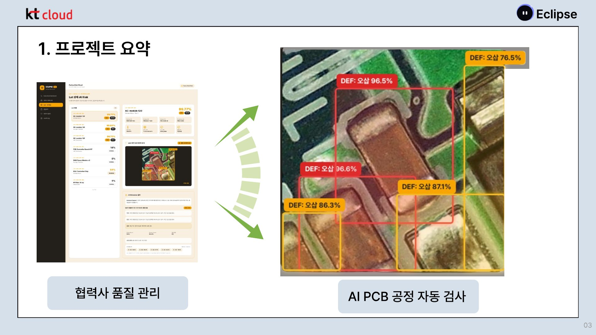
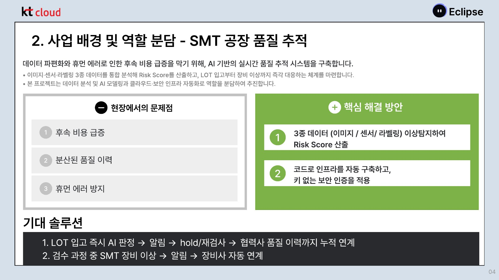
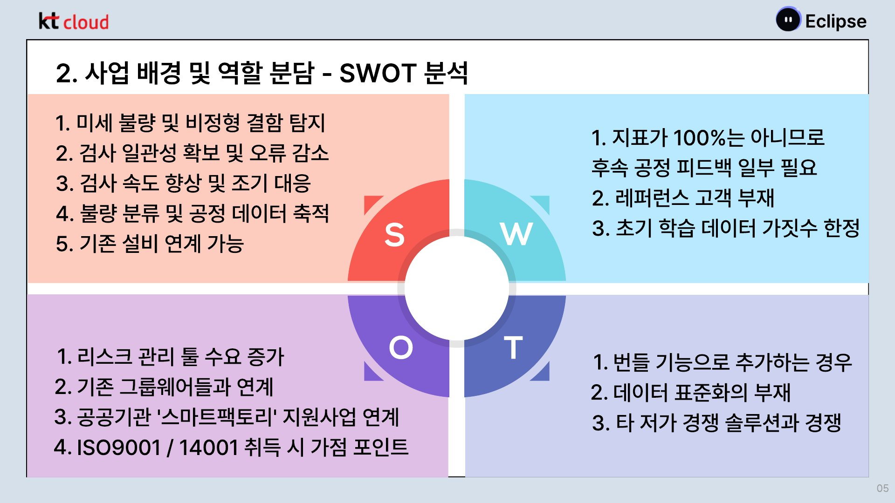
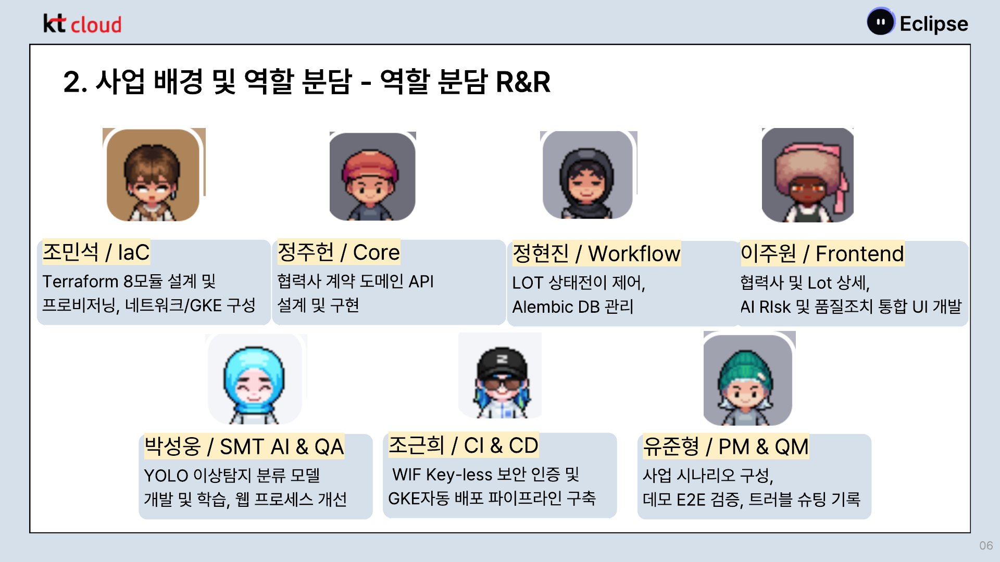
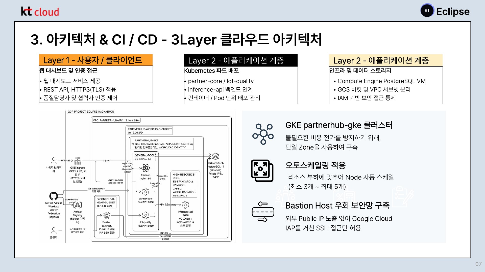
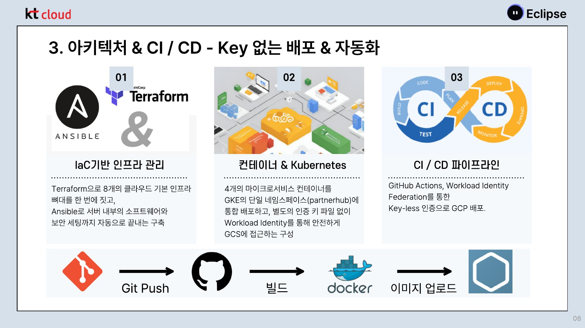
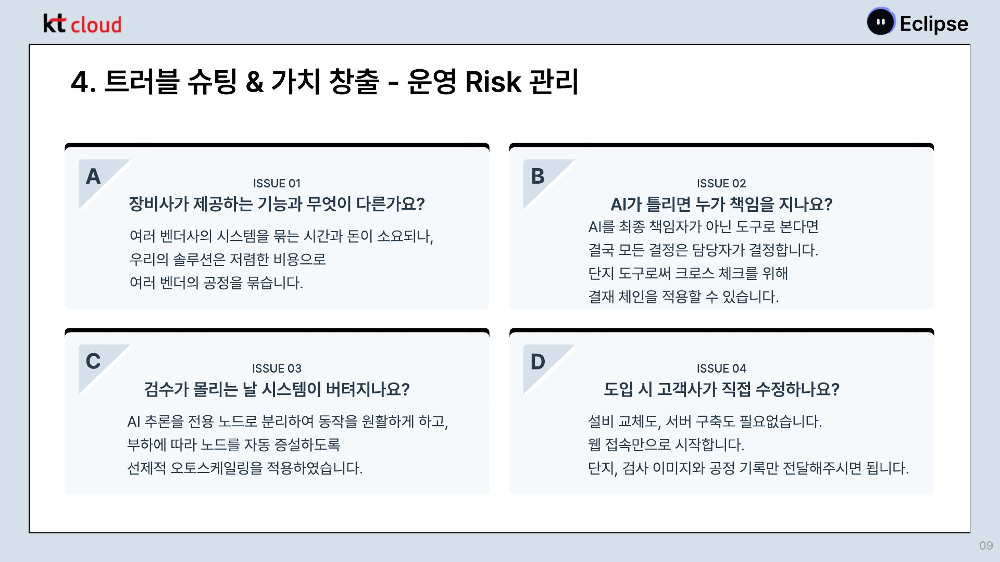
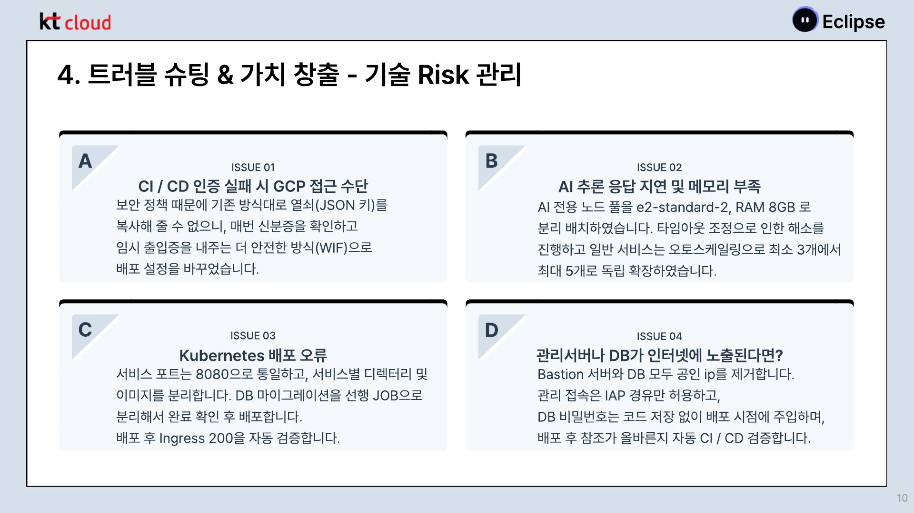
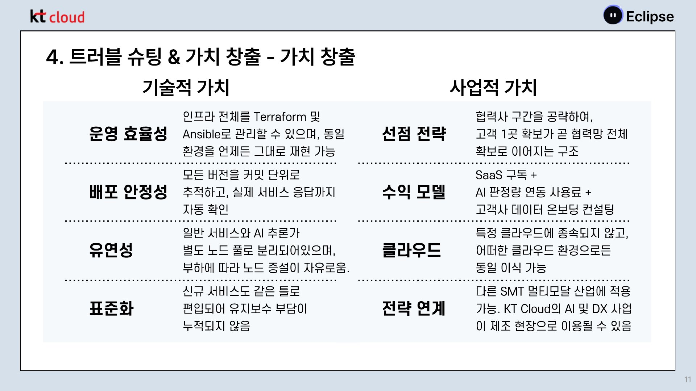
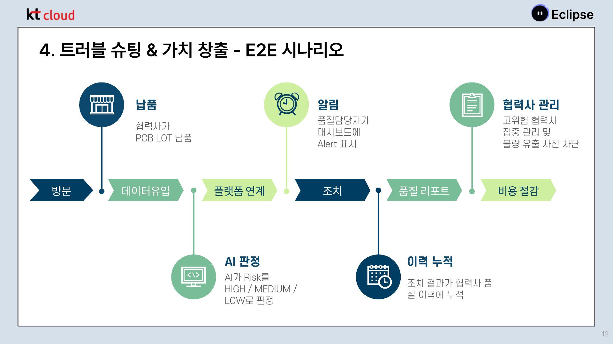
Skills
핵심주요보조
- 협력사 PCB LOT 입고부터 SMT 장비 이상까지,
이미지·센서·라벨링 3종 데이터로 Risk Score를 산출해 바로 대응하는 품질 추적 SaaS입니다. - GCP 인프라를 Terraform 8개 모듈과 Ansible로 코드화하고,
GKE에 4개 마이크로서비스를 키 파일 없이(Workload Identity Federation) 자동 배포했습니다. - YOLO 이상탐지 분류 모델 개발·학습과 웹 업로드 프로세스 개선을 맡았고,
KT Cloud TECH UP 해커톤 2026에서 대상을 받았습니다. - GKE를 단일 Zone으로 구성해 불필요한 비용을 막고,
일반 서비스는 노드 3~5대 오토스케일링으로 AI 추론은 전용 노드 풀로 분리해
필요한 만큼만 자원을 쓰도록 했습니다.
트러블슈팅
- CI/CD에서 GCP에 접근할 인증 수단 문제보안 정책상 기존 방식대로 서비스 계정 열쇠(JSON 키)를 복사해 CI에 넣을 수 없음 해결매번 신원을 확인하고 임시 토큰을 내주는 Workload Identity Federation으로 배포 설정 변경 키 파일 없이 GitHub Actions에서 GCP로 배포
- AI 추론 응답 지연 및 메모리 부족
문제AI 추론 요청 시 응답이 늦어지고 메모리가 부족함
해결AI 전용 노드 풀(e2-standard-2, RAM 8GB)로 분리 배치하고 타임아웃 조정,
일반 서비스는 오토스케일링(최소 3 ~ 최대 5)으로 독립 확장 추론 부하가 일반 서비스에 영향을 주지 않도록 분리 - Kubernetes 배포 오류
문제여러 서비스를 한 클러스터에 배포하는 과정에서 배포 오류 발생
해결서비스 포트를 8080으로 통일하고 서비스별 디렉터리·이미지를 분리,
DB 마이그레이션은 선행 Job으로 떼어 완료 확인 후 배포 배포 후 Ingress 200 응답을 자동 검증 - 관리 서버와 DB의 인터넷 노출
문제Bastion 서버와 DB가 공인 IP로 외부에 노출될 위험
해결Bastion·DB의 공인 IP를 제거하고 관리 접속은 IAP 경유만 허용,
DB 비밀번호는 코드에 저장하지 않고 배포 시점에 주입 배포 후 접근 경로가 올바른지 CI/CD에서 자동 검증
스마트팩토리 Eclipse
Team Eclipse 6인 / 부팀장 겸 IaC/프로비저닝, Full-stack, AI
기간 2026.08.24 ~ 2026.12.03
Skills
핵심주요보조
- Free·Enterprise 테넌트를 DB 서버를 늘리지 않고 같은 PostgreSQL 안의 스키마로 나눠 인프라 비용을 줄였고,
작업이 없는 시간에는 EKS 노드를 0대로 줄이는 비용 절감 계획을 세웠습니다.
아키텍처

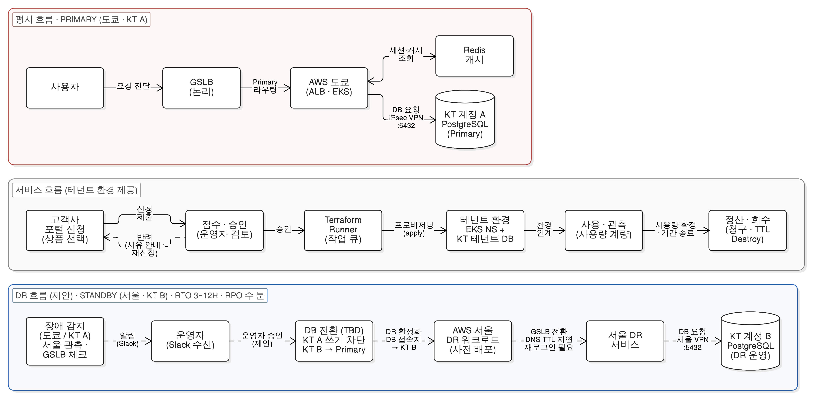
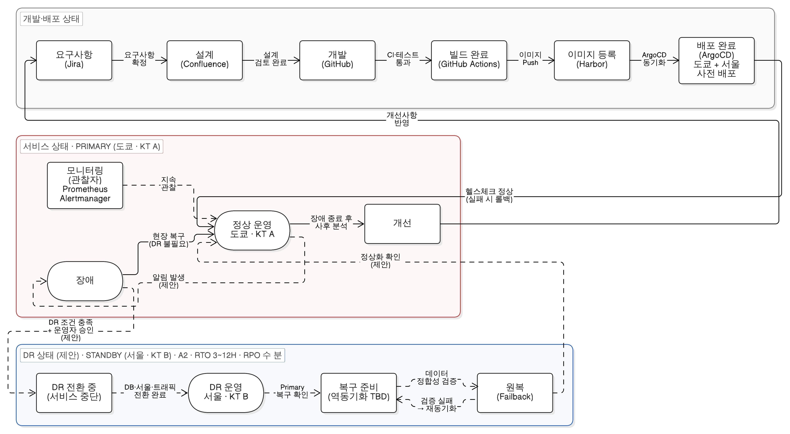
설계 개선
- DB 전환 절차 KT 계정 A 쓰기 차단 후 계정 B를 Primary 역할로 전환하는 절차 확정 필요 split-brain 방지가 핵심
- 원복(Failback) 절차 B→A 역동기화 후 데이터 정합성 검증, 실패 시 재동기화 검증 없는 원복 금지
- 이미지 레지스트리 이중화 서울에 Harbor 복제본 구성 현재 도쿄 단일 배치
- VPN 연결 정보 확인 KT 측 실제 VPN 장비·공인 IP·BGP 지원 여부 서울 DR 확정의 최대 블로커
DB 설계
PostgreSQL 단일 DB portal_meta · 논리 스키마 5개 · 테이블 21개
| identity | 계정, 고객사, 임시 권한 | accounts grants |
|---|---|---|
| request | 자원 신청, 조회용 읽기 모델 | access_requests resource_projections |
| control | 승인, 테라폼 배포 작업 제어 | approval_requests provisioning_jobs products 외 |
| finops | 자산 원장, 시간당 사용량, 청구서 | resource_inventory usage_hourly client_invoices 외 |
| billing | PG 결제 기록 | payment_transactions |
- 신청과 조회 분리 (CQRS) 신청 원본과 화면용 투영 테이블을 나눠 목록 조회 성능 확보
- 멱등성과 동시성 제어 멱등성 키, 낙관적 락 버전, 재시도·전달 상태 컬럼으로 비동기 처리의 중복과 경합 방지
- 배포 추적성 프로비저닝 작업마다 테라폼 모듈 버전, 패키지 SHA-256 해시, State 경로를 기록
- 청구서 무결성 단가표 이력(SCD Type 2), 청구서 동결과 해시, 품목 라인 스냅샷으로 사후 변경 차단
- 삭제 정책 소프트 삭제 후 아카이브에 스냅샷을 남기고, 보존 기간이 지나면 물리 삭제
태그 표준
모든 자원에 필수 태그 6종 · 키와 값은 공백 없는 소문자
| tenant_id | platform · manufacturing · finance | 비용 정산과 테넌트 격리 단위 |
|---|---|---|
| client_id | client-* (공통 자원은 shared) | 고객사 식별, 네트워크 격리, 개별 청구 단위 |
| tier | tier1 · tier2 | SLA 중요도 (핵심 무중단 / 일반·배치·실험) |
| env | dev · stg · prod | 환경 구분과 수명주기 통제 |
| managed_by | eclipse-paas | PaaS 관리 자원 식별, 미부착 자원은 삭제 대상 고아 자원 |
| service | 컴포넌트별 고유 이름 | 서비스 단위 원가 분석, 메트릭 필터링 |
- 기존 자원 일괄 교정 콘솔과 테스트 단계에서 만든 AWS 자원의 누락·대소문자 파편화 태그를 표준 6종으로 교정
- 태그 없는 자산 관리 태그를 붙일 수 없는 KT Cloud 자산은 포털의 자산 원장이 가상 태그 원장 역할
대회
EagleFlow
Single · 설계·구축·운영 전 과정 · IDC 관제·자동 복구
기간 2026.10.28 ~ 2026.11.25


PDF 상세 보기 PDF 다운로드 GitHub 저장소 서비스 바로가기
Skills
핵심주요보조
- 데이터센터(IDC)에 장애가 나면 스스로 알아채고,
운영자가 승인 버튼 한 번만 누르면 자동으로 복구되는 관제 시스템을 혼자 만든 프로젝트입니다. - 가짜 예제 숫자 대신 실제 슈퍼컴퓨터(NLR Eagle)의 공개 전력 데이터를
1분 단위로 흘려보내 실제 서버에서 돌아가게 했고, KT Cloud VM 8대를 역할별로 나눠 Ansible로 구성했습니다. - n8n 같은 워크플로 자동화 서비스 EagleFlow를 직접 만들어,
장애 주입 시험에서 사람은 승인 한 번만 하고 경보·기록·Ansible 복구·보고까지
자동으로 이어지는 것을 확인했습니다. - 쿠폰 100만 원 안에서 서버 사양 맞춤(vCore −12.5%)·공인 IP 1개·필요한 만큼만
디스크 확장(−51%)·오픈소스로 운영비를 줄였습니다.
스케줄러 시뮬레이션에서 작업 몰아 담기와 유휴 노드 절전으로 시설 전력을 약 10% 줄일 수 있음을 확인했습니다.
트러블슈팅
- 승인했는데 조치 실패 (종료 코드 1) 원인bastion의 Python 3.6에는 subprocess의 capture_output 옵션이 없음 해결stdout·stderr를 PIPE로 받는 방식으로 바꿔 Python 3.6과 호환
- 배포 후 빌드 실패 원인Ansible unarchive는 덮어쓰기만 해서, 레포에서 지운 소스가 서버에 그대로 남음 해결레포 파일 목록과 비교해 남은 파일을 지우는 단계를 플레이북에 추가
- 조치 노드를 붙였는데 조치 요청이 생기지 않음 원인노드를 다른 탭의 워크플로에 붙여서 Deploy가 되지 않음 해결실행 로그(노드 5개)로 확인한 뒤 실제 워크플로에 다시 연결
- 경보가 늦게 오는 것처럼 보임 원인"5분간 데이터 없음" 조건과 평가 주기가 겹쳐 실제로 약 7분 뒤에 경보 발생 해결웹훅을 직접 쏘는 수동 시험 절차를 만들어 경보 없이도 바로 검증
- 플레이북 템플릿 오류 원인docker ps의 중괄호({{ }})를 Ansible이 변수로 해석 해결중괄호를 이스케이프해 원문 그대로 전달
다음 단계
- 배포 자동화 (CI/CD) 지금은 패치를 만들고 플레이북을 수동으로 실행함. push하면 검사·빌드·배포까지 이어지도록 바꿀 계획
- 재현성 (IaC 확장) 흩어진 플레이북을 하나로 묶고, VM과 네트워크까지 코드로 관리
- 백업·복구 검증 PostgreSQL·InfluxDB 자동 백업과 실제 복구 기록 남기기
- AI 요약 고도화 규칙 기반 요약을 자체 호스팅 LLM 연결로 확장
기타 프로젝트
FailoverSky
불법 드론 대응 항공 운항 관제 시뮬레이터
개인 프로젝트 / 기획·설계·개발·인프라 구축
기간 2026.08.31 ~ 2026.09.07
Skills
핵심주요보조
- 불법 드론 신고로 공항 운항이 중단되는 상황을 가정해, 직접 수집한 실제 운항 데이터를 바탕으로
경계 → 심각 → 페일오버(HOLD · DIVERT)까지 상태가 전이되는 항공 운항 관제 시뮬레이터를 만들었습니다. - VM 6대 위에 K3s 3노드 클러스터를 구성하고 PostgreSQL · Redis · MinIO, Prometheus · Grafana · k6를 갖춰
Ansible Vault로 시크릿을 관리하는 인프라를 혼자 설계·구축했습니다. - Next.js 쿠키 기반 RBAC과 middleware · Server Action 이중 검증으로 권한을 분기하고,
pg_dump → MinIO 백업과 90일 ILM 수명주기를 CronJob으로 자동화했습니다. - Redis 캐시와 전처리 파이프라인으로 API 응답을 2.9s에서 sub-ms로 줄였고(k6 100 VU 실패율 0.00%),
KEDA 오토스케일 · 보존 상한 · 역할별 사이징으로 인프라 비용을 구조적으로 낮췄습니다.
트러블슈팅
- 코드셰어(공동 운항) 중복 표시 문제편명은 다르지만 출발·도착 공항과 시각이 같은 항공편이 여러 건 표시됨 원인IIAC · KAC 교차 수집으로 같은 운항이 중복 적재되고 무결성 에러가 발생 해결자연키 4개(일자·출발·도착·예정시각) 복합 유니크 키와 PostgreSQL UPSERT 적용 공동 운항편을 한 건으로 통합 표시, 데이터 정합성 확보
- 스케일아웃의 역설 문제Pod를 수평 확장할수록 DB 커넥션이 고갈되고 CPU가 100%로 포화 원인늘어난 Pod가 요청마다 PostgreSQL을 직접 조회 해결Redis 중앙 캐시(TTL 10s)와 DB 커넥션 풀 상한 제어 적용 k6 100 VU 요청 실패율 0.00%, Cache Hit 99%
- 실시간 지연 계산 병목 문제지연 여부를 요청 시점에 계산해 140KB를 직렬화하면서 응답이 느려짐 원인매 요청마다 지연 연산과 Seq Scan, JSON 직렬화를 반복 해결수집 단계 전처리 파이프라인과 완성형 JSON 응답 레벨 캐싱 API 응답 시간 2.9s → sub-ms
OpenStack 기반 VM 오토스케일링
운영 자동화 클라우드 플랫폼 구축
Team Clover 5인 / 팀장 겸 PM, 시스템 아키텍처 설계
기간 2026.06.11 ~ 2026.07.14
Skills
핵심주요보조
- AWS의 Auto Scaling Group처럼 부하에 따라 VM이 자동으로 늘어나는 구조를,
OpenStack의 클러스터링 서비스(Senlin) 없이 Heat 오케스트레이션만으로 직접 구현한 프로젝트입니다. - ZeroTier 오버레이망 위에 OpenStack·Docker Swarm·HAProxy를 구성하고,
Prometheus 알림부터 Ansible·Cloud-init으로 VM 생성과 Swarm 편입까지 자동화했습니다. - 팀장 겸 PM으로 프로젝트를 총괄하며 인프라 아키텍처를 설계하고 Flask 관리자 페이지를 개발했습니다.
- 부하가 있을 때만 VM을 늘리는 오토스케일링과 Cooldown으로 중복 VM 생성을 막아 자원 낭비를 줄였고,
별도 클러스터링 서비스 없이 Heat와 오픈소스(Prometheus·Grafana·MinIO)만으로 구성했습니다.
트러블슈팅
- 악성코드 감염 및 보안 구조 개선
문제운영 중 Control 서버와 Vault 서버에서 Diicot 계열 크립토마이너/백도어를 발견했고,
비정상 프로세스 실행과 외부 의심 통신을 확인 원인초기 운영 환경에 접근 제어와 Secret 관리 체계가 부족했음 해결감염 노드를 ZeroTier에서 격리하고 SSH Key·Token을 교체, HashiCorp Vault로 Secret을 중앙 관리, UFW·Fail2ban·ModSecurity·Auditd로 보안 체계 강화 추가 확산 방지, 민감정보 관리 구조 개선 - NFS 기반 공유 스토리지 구성 문제
문제Docker Swarm에서 Worker Node별 로컬 스토리지를 쓰다 보니,
컨테이너가 다른 노드로 옮겨가면 기존 데이터에 접근할 수 없고 노드별 데이터가 어긋남 원인Docker Swarm은 컨테이너 배치는 자동화하지만 로컬 볼륨 데이터 동기화는 지원하지 않음 해결중앙 Storage 서버에 NFS를 구성해 Worker Node에 공유 볼륨으로 마운트하고,
Docker Volume Driver를 NFS 기반으로 변경한 후 저장 데이터는 MinIO로 백업 모든 Worker Node가 같은 데이터에 접근, 컨테이너 이동 시에도 데이터 유지 - 모니터링 메트릭 수집 누락
문제Grafana 대시보드에 새로 생긴 노드의 CPU·Memory 메트릭이 표시되지 않음
원인Prometheus는 미리 등록된 Target에서만 Pull 방식으로 수집한 후,
오토스케일링으로 생긴 VM 정보가 Target에 자동 반영되지 않음 해결VM 생성 파이프라인에 모니터링 등록 단계를 추가하고,
Node Exporter 상태 확인 후 Prometheus Target 설정을 자동 업데이트 Scale-Out 이후에도 신규 VM 메트릭을 실시간 수집 - Auto Scaling VM 자동 편입 문제
문제OpenStack에서 VM 생성은 성공했지만,
새 VM이 ZeroTier와 Docker Swarm 클러스터에 자동으로 편입되지 않음 원인ZeroTier 노드 승인 절차가 필요하고 Cloud-init 실행 순서와 Swarm Join 시점이 맞지 않음 해결VM 초기화 파이프라인을 다시 설계해 Cloud-init으로 네트워크 설정을 자동화하고,
Swarm Worker Join 자동화와 재시도 로직 추가 VM 생성부터 서비스 클러스터 편입까지 자동화 - Auto Scaling 안정화 문제 문제CPU Threshold를 넘으면 Alert가 여러 번 발생해 VM이 중복 생성됨 원인Scale 이벤트 상태 관리와 Cooldown 로직이 없었음 해결현재 인스턴스 상태 확인 로직을 추가하고 Cooldown Time을 적용해 중복 Scale 이벤트 방지 불필요한 VM 생성 없이 안정적인 Scale-Out
아쉬운 점
- 서비스 운영 보안 강화 필요 인프라 보안 체계는 갖췄지만 실제 서비스 운영 관점의 계정·Secret 관리 정책과 IAM 기반 권한·인증 체계는 보완이 필요함
- ZeroTier 기반 네트워크 성능 한계
오버레이 네트워크 특성상 물리 네트워크보다 지연이 생길 수 있으므로,
대규모 트래픽에서는 전용 네트워크나 최적화된 VPN 구조 검토가 필요함 - Auto Scale-In 미구현 트래픽 증가에 대응하는 Scale-Out 중심으로 구현했고, 축소(Scale-In)는 기간이 더 필요했음
- 서비스 플랫폼 확장성 한계 실제 사용자 서비스를 위해서는 Backend·Database 연동과 MSA 구조 확장이 필요함